Ciudad Frikipedia
 De: La Frikipedia, la enciclopedia extremadamente seria.
De: La Frikipedia, la enciclopedia extremadamente seria.
| De la serie ciudades del mundo:
|
| Ciudad Frikipedia
|
| 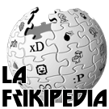
|
|
| (Bandera)
|
(Escudo de armas)
|
|
| Topónimo oficial
|
La Frikipedia
|
| País
|
La hemos puesto en España
|
| Código postal
|
0101110010011001 (cosa de los ingenieros)
|
| Superficie
|
Pixelada
|
| Altitud
|
A gusto de tu scroll (la ruedecita del ratón)
|
| Distancia
|
A un clic desde "enlaces externos" (puedes ir en taxi)
|
| Fundación
|
28 de Diciembre de 2007
|
| Población
|
Frikis variados , estudiantes de informática y niños frikis que no saben que hacer
|
| Gentilicio
|
Frikipedistas
|
| Alcalde
|
Leolo, Krusher y Nexo desde las sombras
|
En el año 2008 despues de Chiquito de la Calzada, esos seres sin patria ni tierra, sin casa ni hogar a los que llamamos (nos llamamos) frikis, hartos de las críticas de la sociedad y la presión que supone ser la futura élite social (según ellos), se exilian de sus respectivos países para fundar Ciudad Frikipedia.
En un principio la ciudad iba a ser llamada "Noble gloriosa y excelentísima ciudad de La Frikipedia fronteriza con el Reino parlamentario de España y refugio de frikis e incomprendidos". Pero en los primeros veinte días, la industria de producción de camisetas, principal sustento económico de la ciudad (tras los impuestos PayPal), cayó en bancarrota por falta masiva de leros, pues los productores cobraban por letras. De este modo la ciudad pasó a llamarse "Ciudad Frikipedia".
Historia
En el año 2007, miles de frikis hartos de la presión social huyen de casa de sus papás y se dirigen hacia un destino común, la fundación de "Ciudad Frikipedia". Un oasis de frikismo donde los amantes de Star Wars pueden pasear vestidos de Anakin Skywalker y armados con un sable laser (de plástico) sin que nadie les mire.
Justo después de su fundación, George W. Bush vio una mancha negra sobre su monitor,desgraciadamente la imagen de nuestra ciudad estaba bajo esa mancha y él creyó que era petróleo. Por supuesto intentó invadir la ciudad, pero conseguimos repelerle... los frikis son mucho friki.
Por lo demás, ya está (¿fundar una ciudad y ganar una guerra en menos de un mes te parece poco?y si te parece poco ... no es poco!)
Geografía
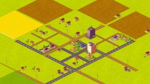 "Ciudad Frikipedia" vista desde el
Guguelé el día de su fundación.
Ciudad Frikipedia fue fundada en el Sur de España. Muchos de sus habitantes se empeñan en que dicha ciudad está en Naboo, otros dicen que está en Japón... ellos son felices, pero la verdad es que está en España.
Lo primero que los frikis hicieron nada más llegar, fue cablear la zona para preparar su principal sustento vital: ordenadores conectados a internet, lo que garantizaba el suministro de porno y conocimientos frikis. Lo segundo sería allanar todo el terreno, ya que debido a la tendencia hacia la obesidad de los frikis, las cuestas habrían sido un gran obstáculo para la ciudad.
Tambien hay gente que dice que dentro de esta ciudad esta el Habbo Hotel, pero a tanto no llegamos, ¿qué esperáis?, demasiado tenemos con ver la publicidad del cada dos por tres a la izquierda de sus pantallas...)
Población
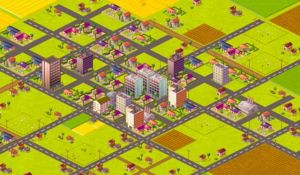 Ciudad Frikipedia, el día 7 de Enero del 2008... Frikis, regocijaos.
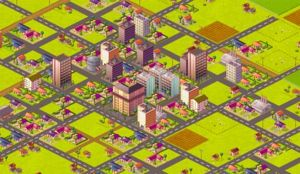 Ciudad Frikipedia, el día 14 de Enero del 2008.
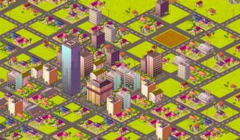 ¡Ya tenemos el primer rascacielos! ¡Emos, ya estáis de enhorabuena!
En su gran mayoría una amplia variedad de frikis (of course). Por ejemplo representantes frikis de todas las tribus urbanas, otakus, estudiantes de ingeniería informática, etc.
- Canis: En todas las películas americanas siempre hay un tonto que deja desenterrado un trapo empapado en sangre, el cual atraerá al monstruo o cocodrilo que acabará comiéndose a toda la pandilla de amigos (primero al joven de color... negro), excepto a la rubita potente y el capitán del equipo de futbol. En Ciudad Frikipedia ha ocurrido algo semejante, un habitante dejó encendida una radio con reggaetón y eso atrajo a miles de canis de los diferentes guetos cercanos a la ciudad. Conseguimos atraer a algunos hacia el lado bueno, les hicimos miembros de seguridad, les dimos una navajilla y ellos solos fueron capaces de repeler al todopoderoso ejercito de EE.UU (jamás insultes a un cani ante sus amigos, da igual que seas la primera potencia mundial... ellos serán más). No obstante el resto sigue robando y delinquiendo, por lo que es necesario reforzar la seguridad de la ciudad. Los canis viven en las afueras de la ciudad, establecen los nidos para sus jessis en cuevas amplias.
- Emos: Los emos están esperando que la ciudad crezca lo suficiente como para que haya rascacielos, lo cual saciaría sus ansias de suicidio. Viven en el barrio "little emo", rico en ferreterías especialistas en la venta de cuchillas y también en venenerias (o como coño se llame la tienda donde vendan venenos).
- Estudiantes de ingeniería informática: Viven en los sótanos de sus casas, conectados unos a otros vía mésenller. Nadie les ha visto por la calle, pero son los que mantienen a la ciudad con vida, pues de ellos depende el suministro de porno y la conexión para jugar online al Counter Strike,al Quake y similares.
- Góticos: Era lógico,al parecer que el mundo es una escoria miserable y conformista,necesitaban un buen lugar mas comodo para vivir,además en esta ciudad se necesitaba de alguien que se encargue de cuidar las miles de tumbas(en su mayoria tumbas de emos) para que no se escapen los muertos ni que los saqueadores roben a los cadaveres(como si alguien estuviera interesado en la tumba de algun emo).
- Jebis. Los encargados del transporte y consumo de cerveza y otros licores,ademas cuando se trata de la guerra son muy buenos para matar,habiéndo tantas canciones que tratan de las guerras,¿qué seria del metal si no hubiera guerra?Cuando EE.UU nos invadio,fueron los jebis junto con los canis y los otakus quienes detuvieron a el todopoderoso ejercito de EE.UU mientras oían las canciones de "war" y "victory song".
- Otakus. Son los únicos con licencia para portar katanas. Viven de pequeñas tiendecitas dónde venden mangas, anime, merchandasing y Hentai, el cual es usado cómo "plan B" en caso de que te vaya lenta la conexión y veas el porno muy lejos de ti.
- Quakers o pros del Counter Strike: Viven las 24 horas en un pequeño barrio conocido como Ciberia.
- Pijos: Donde hay riquezas o posibilidades de explotación, hay pijos. Así que no es de extrañar que cuando aparezcan fábricas, aparezcan pijos. Tallarán figuras de sus más queridos dioses como Tommy, Ralph o Adolfo
Hitler y otros tantos no antropomorfos como el cocodrilo de Lacoste. Otros seguirán adorando a Dios, los llamados capillitas. Abrirán tiendas y comprarán (las funciones fisiológicas pijas por excelencia).
- HOYGAN's: Suelen habitar por las alcantarillas de la ciudad y no discriminéis la posibilidad de que escriban un mensaje en el boletín de la misma.
- chickelitos:Estos extraños seres están a punto de extinguirse por ser una raza débil y poco poderosa, además de ser unos seres difíciles de comprender, ver, oír, tocar, entender, ignorar, comprar, vender, intercambiar, alfabetizar, matar, incriminar, acusar, acosar, limpiar o ensuciar entre otras muchas cosas.
Educación
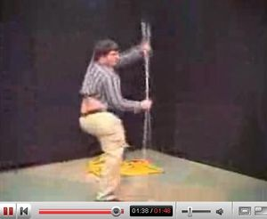 "Pequeño" padawan aprendiendo los caminos de la fuerza en Ciudad Frikipedia.
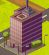 Little emo, se aprecia la maricona combinacion oscura-rosada que es el edificio
Nuestros dos mejores estudiantes.
- "Academia de padawans Obi Wan": Fundada por los frikis de Star Wars. En ella siguen las enseñanzas de Yoda y George Lucas por igual, aprenden a usar el "sable laser de plástico" y a dominar la fuerza. Caer en el lado oscuro equivale a suspender el curso. Un típico ejemplo de conversación en esta escuela puede ser:
Niño friki 1: -¿Cuantas te han quedado para Septiembre?
Niño friki 2: -Joder tío, ¡me han enculado en programación de R2D2 y en conducción de X-Wings, coño!
- Escuela de Samurais/Ninjas/Shinigamis: Fue fundada por los otakus. En esta escuela se imparten clases de manejo de katana o las enseñanzas de Naruto (Historia de la filosofía narutera o técnicas de lucha). Al final puedes licenciarte como otaku o como filólogo japonés, y adquirir una maestria en:
- Ninjutsu
- Genjutsu
- Taijutsu
- Hiten Mitsurugi Ryu
- Kido
- Zanpakutologia
- Ciencias de Dragon Ball
- Facultad de Ingeniería: Importante proveedor de frikis informáticos.
- Universidad Pedro del Hierro: Aquí los pijos aprenden derecho, medicina y teología a la antigua usanza (cursar otra carrera sería un sacrilegio).
- "Guardería Pequeño Ladrón": Aquí es donde se forman los cachorros de los canis, los cuales serán diestros en el arte de robar y zumbar a la tierna edad de cuatro años.
- Instituto de Ingles "Little Friki": En él se enseña Inglés para frikis. También es el único lugar donde hay diccionarios ingles-español, ingles-friki y español-friki, su única función es permitir que los habitantes de la ciudad puedan ver páginas porno inglesas.
- Frikipedia School:Escuela de Ingles en la que se usan metodos tecnologicos de la Frikipedia para aprender el idioma
educadovulgar
Religión

Un ciudadano
McCristiano de "Ciudad Frikipedia" owneando a un inciclopedista infiel.
Las religiones de "Ciudad Frikipedia" son variadas, estas son algunas de las más influyentes:
McCristianismo
El McCristianismo, es una religión monoteísta de origen BigMacJudio que se basa en su
reconocimiento a McJesucristo como su fundador, mesías y figura central. Con más de 2.100 millones de adherentes, o cerca de un tercio de la población mundial, es considerada la religión del mundo con más seguidores. Es una de las tres grandes religiones monoteístas junto al BigMacJudaismo (o "Capricho Oriental") y al "BurguerIslamKing" (fuente: McWikipedia).
Los frikipedistas acuden a los templos-restaurante a adorar a su Dios Ronald McDonald, consumiendo grandes cantidades de calorías que satisfarán al Señor.
BurguerIslamKing
Otras religiones
- Seguidores del Espaguetti Volador.
- Sectarios de Cthuluh .
- Religión Norris.
- Pastafarismo (tecnicamente seguidores del monstruo del spagheti volador, pero siempre habra diferencias).
- Patetismo.
- Jebismo
IdiotismoAbsurdismo.
Economía
La economía de la ciudad está sustentada por la venta de camisetas y el impuesto revolucionario "PayPal" y por la prostitución los excelentes servicios que dan una mujeres por dinero
En los últimos días, el consejo de administradores logró firmar un contrato para traer a la ciudad un cervezoducto y un mujeroducto (el segundo no fue posible por falta de voluntarias, el primero está en manos de la Cruzcampo). Con cerveza, el combustible friki por excelencia, el futuro de la ciudad está garantizado.
También hemos creado nuestro propio juego, el "GTA Frikipedia City" (50 leros donde las camisetas).
Exporta
- Programas informáticos y Sistemas Operativos cutres.
- Navajas (compite directamente con Albacete).
- Frikis.
- Emos (No los queremos en nuestra ciudad)
- Rascaculos
Importa
- Cerveza.
- Canis.
- Cultura cani.
- Porno (en cantidades colosales)
Libros porno que contienen cultura cani y vienen con una cerverza gratis- Inmigrantes ilegales, alcachofas, y una que otra
prostituta
estatuilla de su dios Ronald Mcdonald
Personajes célebres
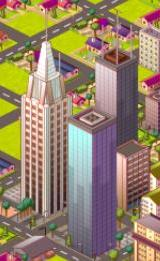 Como los frikis somos "más mejores" nos hemos permitido el lujo de empalmar dos torres gemelas con un Empire State.
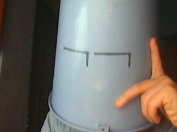 El alcalde siempre da la cara por sus ciudadanos.
- Nexo: Excelentísimo (peloteo) alcalde en funciones de la ciudad.
- Krusher: Mueve los hilos desde el sótano de su casa.
- El Sevillano: Fundador de la ciudad. En cuanto los administradores se enteraron de que el terreno donde se iba a fundar la ciudad estaba inexplorado y había peligro de muerte, le mandaron a él.
- KhazikeKhashondo: Es el "Ministro de Recepción". Si quieres el permiso de residencia... tus cojones y/o ovarios tendrán que pasar por la punta de sus zapatos.
- Doctor Grijander: Es el ministro de Educación (así nos va). Forma parte de la Liga Humanística, que lucha contra la expansión "otaku-ingeniero-informático".
- Frikiman: Es el Ministro de Justicia. Imparte la ley bajo el traje de... conviene que no sepais su doble identidad, pues tendríais que morir.
- Roms: Es el Ministro de Exteriores, uno de los más cuerdos del lugar.
- Nadaquever: Ministro de Economía y asesino a sueldo.
- Kraken_22: Embajador, porque es el unico que sabe traducir español a friki (y viceversa) e ingles a friki (y viceversa).
- Azulejos: Creador del GTA Frikipedia City.
- Frikih: Es el Ministro de Cultura. (la que nos ha caido) Imparte cultura con sus dos ayudantes semiautomáticas, no combiene que se enfade, que luego no responde...
- Guilfer: Mascota oficial de la ciudad/Tonto del pueblo/Borracho del pueblo.
- Yo no tu: Gran filosofo del pueblo aunque sus frases no se entienden (Que pendejo filosofo nos toco)
- rascaculos para financiar sus experimentos. Su laboratorio está escondido en una montaña con carteles lumunosos que rezan "ElInventor Science". Actualmente esta al mando de la division Ciudad Frikipedia de la multiuniversal RoN-CORP, que se dedica a crear y experimentar con virus capaces de darle a las personas habilidades super y/o/u/e/w infrahumanas (dependiendo de la persona y/o cosa a la que se lo aplique)
- Secret zombie(Friki R y Friki R.exe):El vivía En Ciudad Frikipedia Solo se conoce en Los Periodicos de que se Comio Lo que una Persona no Podia comer y aun No perdió La memoria No se conoce Muy bien Solo se conoce en Los Periodicos Pero Se vio una vez Intentando Asustar Y no se sabe Nada mas de El
Pero se LLego a Friki R.exe No se sabe como Paso esto
¿Cómo funciona?
A medida que la ciudad vaya recibiendo tus visitas irá creciendo, y aparecerán más edificios (tiene poco misterio). El objetivo es llegar a ser la ciudad más grande de Espiña y ¿por qué no? dominemos el Mundo. Para ello deberás pulsar al menos una vez al día sobre los enlaces que os ponemos aquí abajo. Puede que te anime el saber que algunas de las principales páginas porno tienen sus propias ciudades... tu verás (relaciona: porno = bueno).
Nivel de población
La ciudad cuenta con un número determinado de habitantes, que irán aumentando según las visitas que reciba la página de la ciudad. ¡Ojo! no vale entrar y refrescar una y otra vez la página, solo una visita por día y persona (que sois unos espabilaos). Para aumentar la población, simplemente pulsa sobre este enlace: Población (Cerrado por desequilibrio en la cuidad) y abónale los 30€ pertinentes a Nexo (es broma... solo son 5€).
Otras necesidades
Pero claro, toda ciudad tiene sus necesidades y la nuestra no va a ser menos ("también somos personas"). Será necesario mejorar la industria, la red de transportes, la seguridad, el medio ambiente y el comercio. Para ello debes pulsar sobre los siguientes enlaces, los cuales funcionan mediante un mecanismo similar al de la población (cada persona puede hacer una cosa al día).
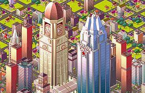 Hemos puesto un Big Ben y más edificios grandes porque somos la leche.
- Red de transportes: Tú verás si quieres ir "a patas" a los sitios.<Voz Terminator>Pulsa aquí si quieres vivir</voz Terminator>: Aumentar transportes
- Seguridad: Lo malo de la ciudad es que el brillo de las farolas ha atraído a los canis, debido a la obsesión que estos seres tienen por el brillo. Desgraciadamente el sistema que teníamos para repelerlos no ha funcionado (compramos la gasolina pero se nos olvidó el mechero), por lo que deberemos aumentar la seguridad. Para aumentar la seguridad pulsad aquí: Aumentar seguridad
- Medio ambiente: ¡Que no nos tachen de puercos! Tampoco vamos a ingresar en el protocolo de Kioto (sale muy caro), simplemente vale con que nos duchemos una vez al día y pulsemos aquí: Aumentar medio ambiente
- Comercio: Los impuestos PayPal y la venta de camisetas son insuficientes para cubrir los gastos. Pulsa aquí si quieres seguir manteniendo tus caros gustos de friki (los pijos y sus ansias de consumir leros de papa te lo agradecerán): Aumentar comercio.
Trabajar, ducharse... será duro, pero debemos conseguir que nuestra ciudad sea una de las más grandes.
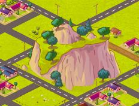 Aquí escondido está ElInventor Science, el laboratorio de la ciudad.
- Atención, Achtung, danger, pericolo, etc: Pulsar solo sobre la población puede llevar al desequilibrio de la ciudad y sus necesidades, posibilitando que los canis tomen el control e instauren su cultura (seriamos el hazmereir). Por eso tienes que pulsar sobre todos los enlaces.
"¡Quiero papeles!"
Lo último que tienes que hacer para ser un buen ciudadano, es lucir tu permiso de residencia en tu página de usuario:
|
|
Este usuario visita frecuentemente Ciudad Frikipedia y hace tiempo que la ve crecer
|
ponerlo como
{{Frikibox:Ciudad Frikipedia}}
Véase también
Enlaces externos
- ATENCIÓN: Hay que pulsar sobre todos.
Si ya estás familiarizado con el proceso, selecciona los enlaces diréctamente desde aquí:
Clasificación
La clasificación de ciudades españolas es la siguiente:
| Ciudad.
|
Habitantes (aproximados).
|
| 1 tostandos |
1105690 .
|
| 2 idem 32 |
1029997.
|
| 3 cafe barcelona |
1010587.
|
| 4 quetequemas |
908202 .
|
| 5 molletlandia |
752069.
|
| 6 chemistar |
749767 .
|
| 7 los locra |
604541 .
|
| Ciudad Frikipedia |
7316.
|
Autor(es):
- Krusher
- Frikiman
- Alex2610
- Guilfer
- Niko
- Khazike Khashondo
- ElInventor
- El Sevillano
- Nadaquever
- Kraken 22
Frikipedia 2005-2016, Licencia
GFDL 1.2 - Extraído por FrikiLeaks